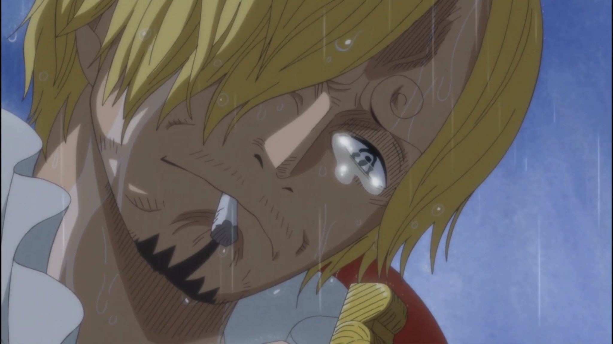
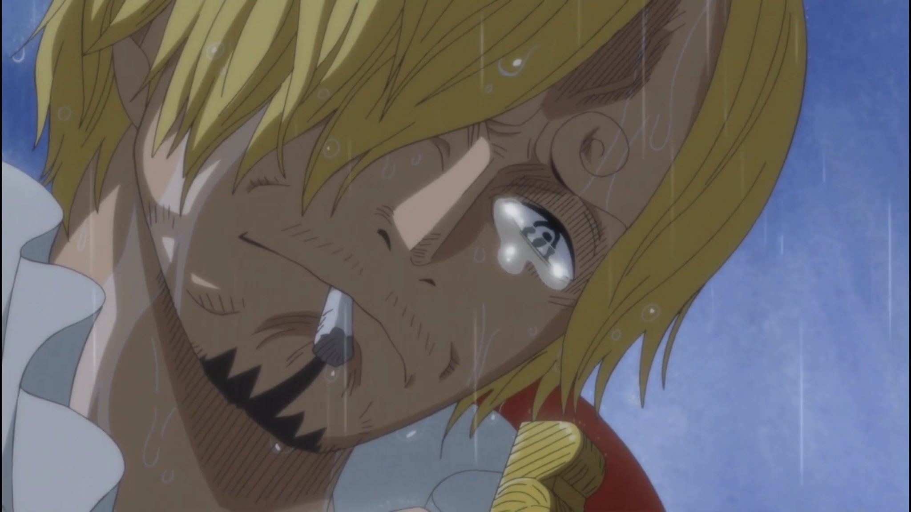

Site do Sanji triste
Aqui você observa o site a respeito deste grande personagem de One Piece. Marcha nos progresso indeependente.
Github Youtube Aqui você observa o site a respeito deste grande personagem de One Piece. Marcha nos progresso indeependente.
Github Youtube 